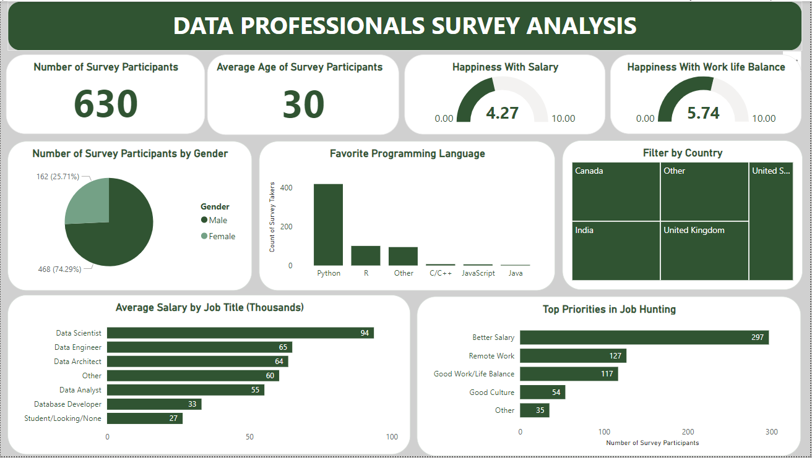

In this Project, i organized a messy, real-world dataset on GLOBAL LAYOFFS into a well-cleaned, structured format to
enhance its usability for Analysis, Visualizations, and Trend Identifications; using MY SQL.
Data Exploration centered on World LAYOFFS; thoroughly examined the data to uncover its underlying narrative,
and identify patterns, trends, outliers, and other noteworthy elements that can provide valuable guidance for further analysis using MY SQL.

This project focused on analyzing survey data from different data professionals in the World and representing it in a dashboard to provide clear insights into the World of Data professionals and key metrics that can influence decision making